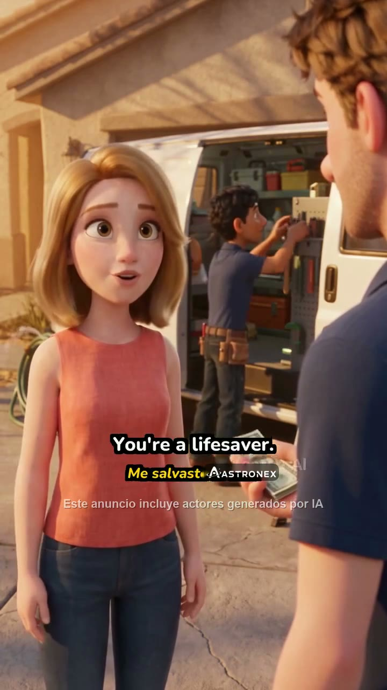

Cả tool trong 1 hình
5 bước. Tím = máy làm, xanh = bạn làm. Bấm một bước để mở màn đó.
1Đưa video vào
bộ tự tìm · thư viện · máy · link Drive · chọn nơi nhận
Bạn: 1 lần, ~1 phút
2Máy thay logo
tìm logo cũ → bám theo → đè ASTRONEX
Máy: vài phút/video, bạn không cần chờ
3Lô: việc của bạn
sắp theo chỗ cần bạn · dải màu đỏ/vàng/xanh
Bạn: xem chỗ đỏ / vàng trước
4Khoanh chỗ lộ
khoanh → máy sửa tiếp → xem 2 giây → Đúng
Bạn: vài giây mỗi chỗ
5Xuất
tự đưa tới bộ gốc / bộ mới / thư mục Drive
Máy: tự động
Vòng tự học
Chỗ bạn khoanh→
thành 1 ca kiểm tra (video + khung + vị trí)→
bản cải tiến sau phải làm đúng mọi ca trước khi lên→
bạn khoanh ít dần
Khác gì so với trang hiện tại
- Hiện tại: duyệt cả video bằng 1 khung; Hỏng = gõ "giây thứ mấy". Mới: thấy chỗ lộ trên dải thời gian, khoanh trực tiếp.
- Hiện tại: máy không chắc ⇒ chỉ có "Bỏ qua". Mới: khoanh logo 1 lần trên 1 khung, máy làm phần còn lại.
- Hiện tại: 1 trang làm 4 việc. Mới: 4 màn theo thứ tự công việc.
- Hiện tại: xem video phải mở Drive. Mới: xem 2 giây ngay tại chỗ sửa.
Đưa video vào — một màn: chọn nguồn bên trái, nơi nhận bên phải, bấm Bắt đầu
PN.2310C · 40 video · TikTok · vào bộ 23/10
Máy đoán trước: 34 video có logo đối thủ, 6 video không có (bỏ qua sẵn)
— minh hoạ
Thành phẩm đi đâu?
Lô 23/10-2 · 40 video
· máy xong 40/40 · cần bạn: 3 video, 4 chỗ · 31 video máy chắc · 6 video không có logo cũ
Dải màu = cả video theo thời gian: xanh đã thay chắc · vàng máy cảnh báo (đoán, hoặc ô đè chồng phụ đề / đổi cỡ đột ngột) · đỏ máy biết còn lộ · xám không có logo. ⚠ Máy KHÔNG tự thấy được chỗ đè lệch nếu nó tưởng mình đúng — vì vậy có dải ảnh soi nhanh (dòng cuối). Số liệu minh hoạ.

Test 03_13.mp4 5′51″ · 1 chỗ vàng · 1 chỗ đỏ
ảnh
03_12
03_12
Test 03_12.mp4 0′18″ · máy không tìm thấy logo cũ
Khoanh logo 1 lần trên 1 khung — máy làm phần còn lại.
ảnh
03_22
03_22
Test 03_22.mp4 0′16″ · 1 đoạn máy đoán
31
video
video
31 video máy chắc · toàn xanh
Mỗi video có 3 ảnh phóng to vùng logo (đầu · giữa · cuối) — lướt cả 31 video bằng mắt trong 1 màn, thấy lộ thì bấm vào ảnh đó để khoanh.
6
video
video
6 video máy cho là không có logo cũ · xám
Máy có thể bỏ sót logo mờ (đã gặp: chữ "CO" mờ trôi). Mỗi video 3 ảnh để bạn xác nhận.
0:000:02 · chỗ vàng5:51
Test 03_13.mp4 — chỗ vàng 0:02 (máy cảnh báo: ô đè chồng phụ đề)
Chữ "AI" của logo cũ còn lộ bên phải ô ASTRONEX. Khoanh phần còn lộ ở ảnh trái (hoặc trong ô phóng to).
Phóng to quanh chỗ cần sửa — vàng đứt = ô máy đã đè · đỏ = chỗ bạn khoanh
Chưa khoanh gì.
Phím tắt J/L lùi/tới 1 khung · Shift+J/L chỗ cần xem trước/sau · Space xem gốc · Enter Đúng · Esc khoanh lại
Câu đang mở: video có được gửi ra dịch vụ AI bên ngoài để thử xoá logo không?
Giải thích câu hỏi 3. Chưa cần trả lời ngay.
A. Mặc định — chỉ xử lý trên máy công ty
Video chạy trên máy ca-n của công ty, không rời khỏi công ty. Không tốn tiền thêm. Chất lượng như tool hiện tại + bạn khoanh chỗ lộ.
B. Gửi ra dịch vụ ngoài (ví dụ Bria)
Tải video lên máy chủ của hãng để AI của họ xoá logo. Giá ~$0,14 mỗi giây video ⇒ video 30 giây ≈ $4,2 (~105.000đ). Mỗi lần gửi tối đa 5 giây.
Có thể xoá đẹp hơn — chưa ai đo trên loại logo chữ mờ của ta. Video creative rời khỏi công ty.